I drove to Hudson, took the train to Penn Station, the 7th Ave. subway to 14th street, and walked to Washington Square Park.
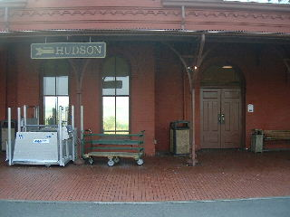 |
| Hudson Train Station |
I sat on a bench in Washington Square Park for about an hour and a half, ate one of my sandwiches, and talked to some high school students from New Jersey who sat down beside me. There were lots of police there. At one point a bunch of protesters with signs marched into the park, and were stopped and turned back by the police. No arrests that I saw. We didn't have a permit to protest in Washington Square Park, something I knew beforehand from the Cures Without Wars email.
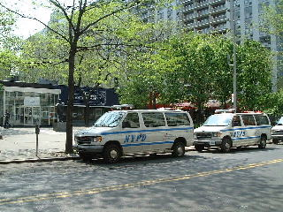 |
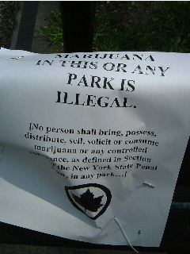 |
| Police Trucks and Statue of LaGuardia | Sign on a park bench |
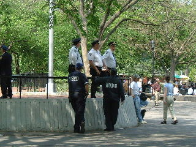 |
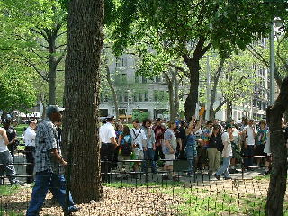 |
| Cops in Washington Square Park | Protesters being evicted |
At about 12:30, I asked the gaggle of cops who were standing next to my bench whether it was OK with them if I assembled my sign and then walked to the parade assembly point. One cop, in a black uniform, said it was OK with him. A cop in a white uniform, however, said that we didn't have a permit for Washington Square Park, so if I showed my sign there, they would take it away. So I walked to the parade start point with the New Jersey high school students following along.
When we got to Broadway and Houston, the start point, I asked one of the high school students to help me assemble my sign. I taped the handle to the foam board, then taped the signs on top. We then went to a "holding pen" that the cops had erected to wait for 1:00.
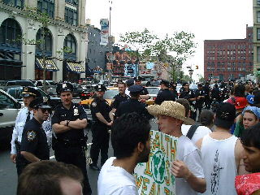 |
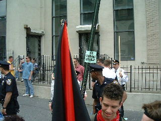 |
| Cops beside "holding pen" | Another "holding pen" picture? |
We marched for about an hour and a quarter, finally arriving at Battery Square Park. Some under-cover cops dragged off the people right in front of me at one point. I booed them, but didn't get much of the crowd to join me.
<flame>
Thinking about this and an arrest I witnessed in
Battery Square Park led me to an idea. We must train ourselves
how to respond to an arrest for any victimless crime (cannabis
possession in the case of this march), Everybody sit down on the
ground, as close to the arrest target as you can get and oink at the
pigs. Keep it light. Treat the cops like unruly children who refuse to
learn. The idea is to shame them. Occasional calls of, "Soooooey" or,
"Pigs go home", will make it more fun. If they want to arrest you, go
limp and make them drag you away. Remain peaceful. If attacked by the
pigs, defend yourself by going into the fetal position and holding
your hands over your head. Tell them nothing but your name and
address. Do NOT show ID. Plead innocent and demand a jury trial. If
they EVER stop giving us jury trials, then it will be time to kill
them. Make sure the jury knows that they have a right and duty to find
you innocent because the law is wrong. The judge probably won't like
this. Tough.
</flame>
During the march, I walked and talked for a while with John Clifton, the New York Libertarian Party candidate for U.S. Senator. I told him that I don't plan to vote in November, but that I might still change my mind. I didn't talk with him much, but he seemed a reasonable fellow, and his literature makes sense. I'd vote for a bum off the street before Herr Rudy or Queen Hillary. Nice to have a real alternative. If you must vote, choose him. Remember, if you choose the lesser of two evils, you are still choosing evil. Don't waste your vote on an evil person. Choose good instead.
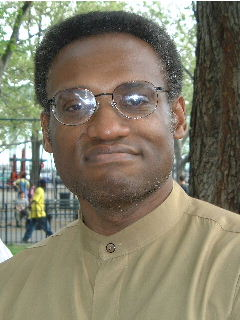 |
| John Clifton |
I also briefly met Bob Armstrong, who is the Libertarian Party candidate for U.S. representative from one of the New York City districts. He tried to convince me to vote.
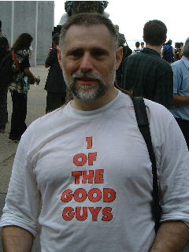 |
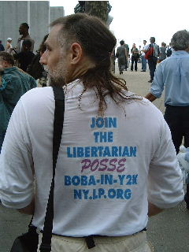 |
| Bob Armstrong, 1 of the good guys | Join the Libertarian Posse, BobA-in-Y2K |
I took a few more pictures at the Libertarian Party table in Battery Square Park. Bob Armstrong brought the sign with the famous Elian Gonzales picture. He and John carried it for most of the parade.
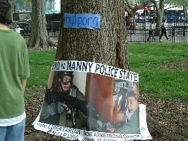 |
|
| Bob Armstrong's sign: End the Nanny Police State | |
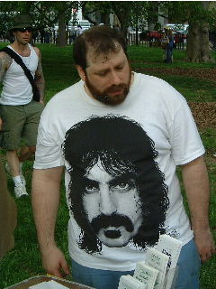 |
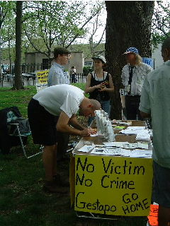 |
| Unknown man with Zappa shirt | No Victim, No Crime. Gestapo go home. |
Here are a couple of other signs/outfits I liked and remembered to photograph.
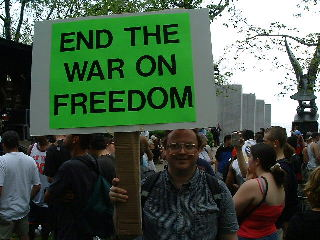 |
|
| Me with my "End the War on Freedom" sign | |
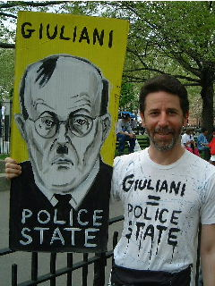 |
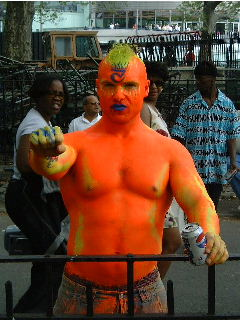 |
| Giuliani Police State | Orange Man (I think he was there last year, too) |
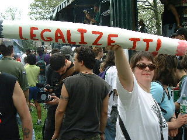 |
|
| Legalize It! | |
The uniformed cops mostly disappeared after the parade, unlike last year when they made a ring around the outside of the crowd. The plain clothes guys made arrests, though. I saw one guy in plastic handcuffs, with a burly pig holding his arm.
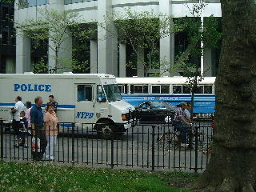 |
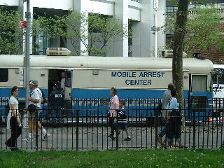 |
| Police van and bus | Mobile Arrest Center |
I took a few other pictures of the crowd and the first band. We got to the part at around 2:15. I left shortly after 3:00 so that I could get back to Chatham by 6:30 for Christopher's school play. There were a bunch of speakers and bands scheduled, but I missed them.
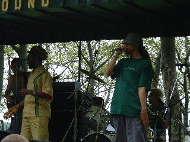 |
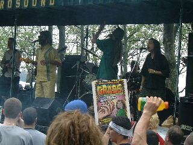 |
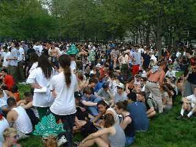 |
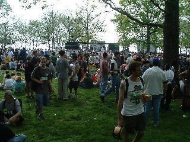 |
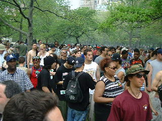 |
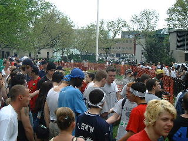 |
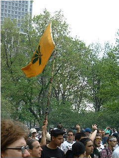 |
|
I had a good time. Last year I noticed lots of tension in the air. It was hard to remain calm. This year seemed a lot more relaxed. Maybe I was just more used it. Hard to tell. I'm lousy at estimating crowds, so I won't try. I thought we looked like fewer than last year during the parade, but we filled up more of Battery Square Park than last year, so I think there were more of us.
I'll be looking for stories in the news and will put pointers here when I find them, in sha' allah.